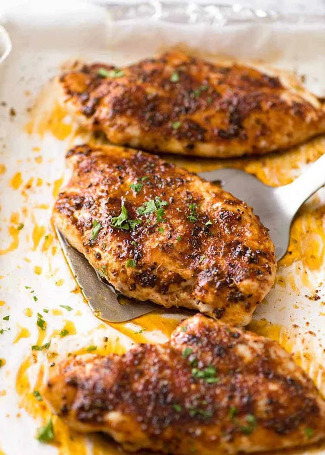

Home
Oven Baked Chicken Breast

Description
Really simple, really quick, delicious!
Ingredients
- 4 chicken breasts
- 2 tsp olive oil
- 1 1/2 tbsp brown sugar
- 1 tsp paprika
- 1 tsp dried oregano or thyme
- 1/4 tsp garlic powder
- 1/2 tsp each salt and pepper
Method
- Preheat oven to 220°C (200°C fan).
- Pound chicken to 1.5cm at the thickest part – using a rolling pin, meat mallet or even your fist (key tip for even cooking + tender chicken).
- Mix Seasoning.
- Line tray with foil and baking / parchment paper. Place chicken upside down on tray. Drizzle chicken with about 1 tsp oil. Rub over with fingers. Sprinkle with Seasoning.
- Flip chicken. Drizzle with 1 tsp oil, rub with fingers, sprinkle with Seasoning, covering as much of the surface area as you can.
- Bake 18 minutes, or until surface is golden per photos and video, or internal temperature is 165°F/75°C using a meat thermometer.
- Remove from oven and immediately transfer chicken to serving plates.
- Wait 3 – 5 minutes before serving, garnished with freshly chopped parsley if desired.